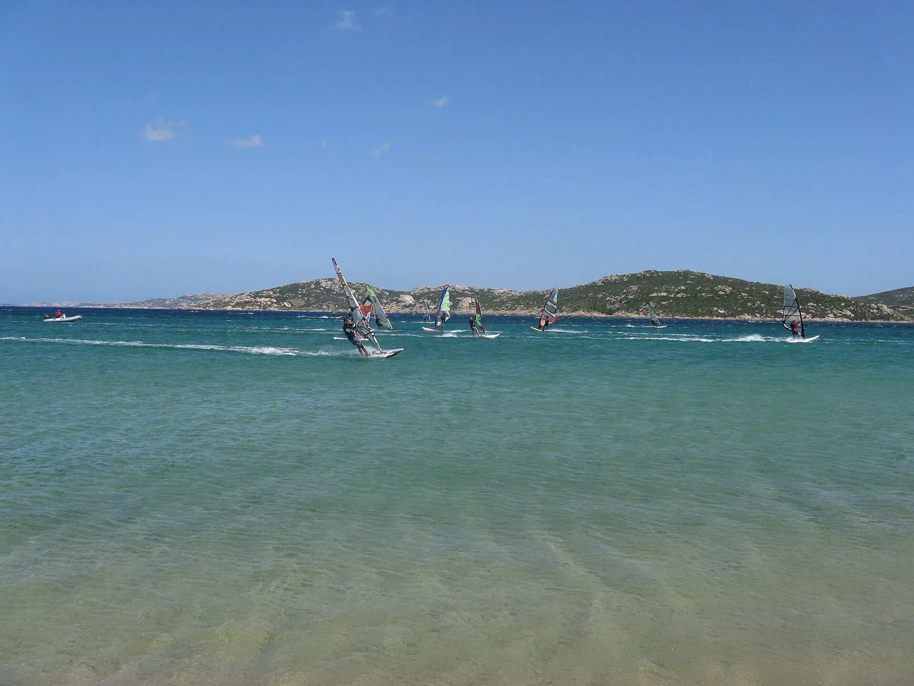

Porto Pollo
Palau, Sardaigne, Italie · windsurf, kitesurf

Baie de Gallura, au nord de la Sardaigne, coupée en deux par l’isthme de sable de l’Isola dei Gabbiani. Le vent canalisé par les Bouches de Bonifacio en fait l’un des spots de windsurf et de kitesurf les plus réputés de Méditerranée.
- Lieu
- Palau, Sardaigne, Italie
- Niveau
- Intermédiaire
- Activités
- windsurf, kitesurf
- Type d'eau
- Mer / océan
- Coordonnées
- 41.19, 9.32 (position approximative du secteur)
Dangers à connaître
- Vent souvent fort et rafaleux dans les Bouches de Bonifacio.
- Baie très fréquentée l’été : partage l’eau avec baigneurs et écoles.
Le conseil d'Ocean Buddy
Kite et windsurf ont des zones séparées : demande aux écoles sur place où gréer et respecte les couloirs balisés.
Ouvrir dans Ocean Buddy Télécharger sur l'App Store
Source : Fiche Ocean Buddy · septembre 2026 · à vérifier localement.